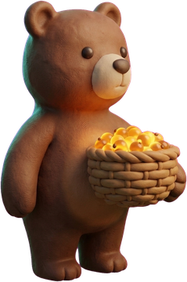
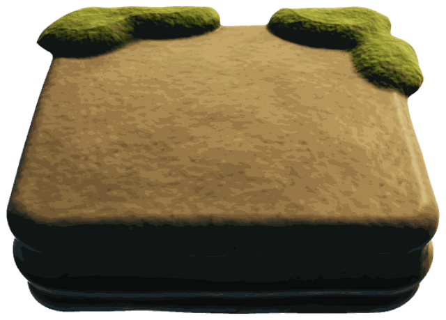

מה תוקן במראה ב׳: האבנים ברוחב 640px והרקע 2560px (ללא שום טשטוש על האבנים), אור זהוב חמים בצד שפונה לנר ולשקיעה וצל כהה בצד השני, דפנות משוכבות חמימות יותר (פחות כחולות), אבנים במים שקועות בחלקן התחתון מתחת למים שקופים עם פס רטוב כהה ואדווה רכה (בלי טבעת בהירה), וצל רך מתחת לאבנים על הדשא.
מראה ב׳ — אבני צפחה חמימות (640px)
אבנים 640px · רקע 2560px · בלי טשטושלפטופ (1280×800) — אבנים שקועות בנחל ועל הדשא





הילד שומע: ״איפה האבן העגולה?״ · לאחר האישור נבנה למשחק עם נחל ריק בתחילת כל סיבוב (3–4 אבנים בסיבוב, והדובון קופץ מיד על כל אבן).
טלפון לאורך (390×844)
עיגול · 640pxריבוע (חלק) · 640px
משולש · 640pxכוכב · 640px